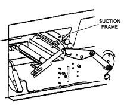

Operating Documentation
Direction 5112972-800, Rev# 2
CT Planned Maintenance Procedures
Operating Documentation |
| Required Persons | Preliminary Reqs | Procedure | Finalization |
|---|---|---|---|
| 1 | Timing Not Applicable | 5 mins | Timing Not Applicable |
Procedure Effectivity:
| Assembly: | MATRIX CAMERA |
| Subassembly: | |
| Purpose: | Clean The Autoloader Suction Cups |
| Last Revised: | July 1995 |
| Item | Qty | Effectivity | Part# | Manufacturer |
|---|---|---|---|---|
| Lint-free Cloth | - | - | - |
| Do not open rear or side panels without removing unexposed film from film plane and closing the send and receive magazines. | |
To clean the suction cups, you must access them by removing either of the MI-10's side panels. The five suction cups are located on the suction frame which runs across the width of the autoloader directly above the send magazine. (See Illustration 1).
Illustration 1: Location of Suction Cups

| Never use alcohol to clean the suction cups as this will cause deterioration of the rubber and result in premature failures of the suction cups. | |
Dampen a soft, lint-free cloth with water and wipe the underside of each suction cup. Dry each cup, ensuring that no moisture remains.
No finalization required.